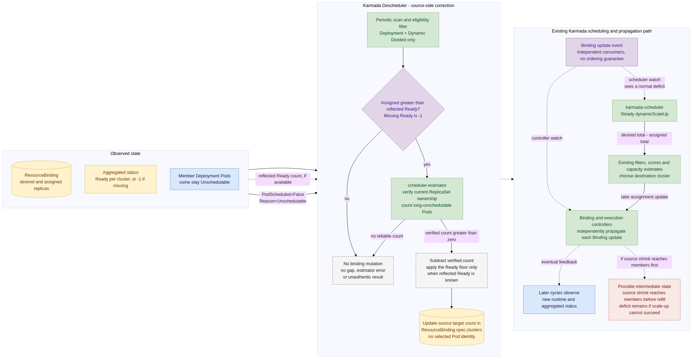
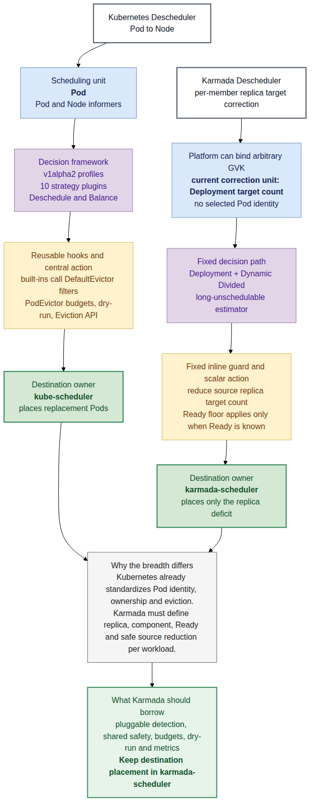

Karmada Descheduler
检测 + 撤销周期观察运行态，按已验证异常数量降低 member 副本目标；不选择具体 Pod。
Binding.spec.clusters[].replicas
Karmada Scheduling Research
为什么首版只支持 Deployment，为什么千问子场景更适合它，以及它与 Kubernetes Descheduler 的真正差距。
Descheduler 只把失效旧分配变成一个普通副本缺口；新位置仍由 scheduler 决定。
检测旧分配失效，与决定新分配位置，是两种不同职责。
周期观察运行态，按已验证异常数量降低 member 副本目标；不选择具体 Pod。
Binding.spec.clusters[].replicas
过滤、打分、估算容量，决定缺口应该补到哪个集群。
Steady / dynamicScaleUp
用户点名 workload，写入时间戳触发一次调度；Dynamic Divided assignment 使用 Fresh。
rescheduleTriggeredAt
Evidence: current Karmada controller and scheduler paths
既谈资源不足，也谈新集群加入后的利用率均衡。
只处理资源不足造成的长期 Unschedulable Pod。
首版实现围绕 replicas、Ready 和 owner chain 落地。
GVK、abstract workload、custom Ready interpreter 仍留有边界。
准确说法：当时只实现了一个 Deployment 长期放不下的最小故事。
Evidence: Issue #697, KEP-697, PR #726, PR #1392
replicas单一期望副本数readyReplicas成功反射时可作为运行下界owner UID能定位本轮 rollout 的 Podreplaceable副本通常彼此可替换扩 Kind 之前，必须先有 replica、Ready、ownership、source shrink 四个合同。
Descheduler 决定 target“少 2”；member controller 决定删谁，scheduler 决定补去哪。

scheduler 不需要理解 Pod condition、Deployment owner chain 或异常持续时间。
Canonical source: day38-karmada-descheduler-control-loop.mmd
rescheduleTriggeredAt这是本次调研的 owner 建议；#7662 尚未收敛最终 owner/API。
Issue/PR 与官方书面纪要未确认 Qwen/GPU；公开会议录像的本地 ASR 提到 Spot GPU，但不能绑定具体产品。
右侧任一条件成立，就需要 workload-aware migration 合同，不能只靠当前 Descheduler。
当前固定 Deployment；多组件、身份、完成进度和数据状态无法映射为一个标量副本缺口。
必须准确定位本轮 workload 的 Pod，并区分真实长期不可调度、发布中和暂态抖动。
缺少 release budget、dry-run 和统一安全层；readyReplicas 缺失时记为 -1，不会自动停止缩减。
Descheduler、scheduler、Rebalancer 不能同时独立修改同一 Binding，完成条件也必须唯一。
先建立安全骨架和 ownership，再谈多 Kind、多策略。

统一对象、标准 Eviction API、PDB 和 owner controller。
当前只修正 per-member Deployment target/count，不携带具体 Pod identity。
值得借鉴的是框架与安全机制，不是直接照搬 Node 级策略。
Canonical source: day38-karmada-vs-kubernetes-descheduler.mmd
RemoveDuplicatesLowNodeUtilizationHighNodeUtilizationRemovePodsViolatingTopologySpreadConstraint
RemovePodsViolatingInterPodAntiAffinityRemovePodsViolatingNodeAffinityRemovePodsViolatingNodeTaintsRemovePodsHavingTooManyRestartsPodLifeTimeRemoveFailedPods
成熟来自统一 Pod 边界、标准撤销动作和 2017 年以来的持续演进。
Baseline: kubernetes-sigs/descheduler v0.36.0
明确 opt-in、长期 Unschedulable、replaceable replica、已知 Ready 下界和唯一完成条件。
增加 dry-run、release budget、strategy/reason metrics，以及统一 Binding mutation executor。
定义 resolver 合同和 support matrix；多组件先解决 per-component placement，不宣称 any workload。
最终原则：Descheduler 把旧 target 异常转成数量缺口，scheduler 始终决定新位置。
打开完整证据报告